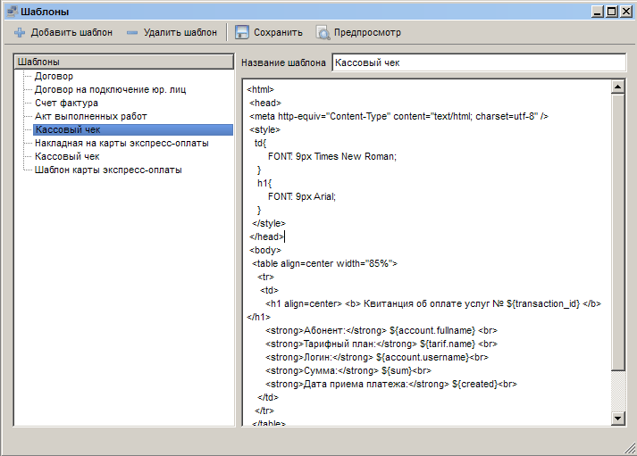
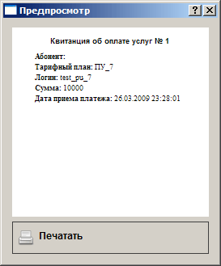

|
Интерфейс и логика |
Top Previous Next |
|
Раздел «Шаблоны документов» открывается
– через меню «Главное меню» → «Шаблоны документов»;
Главное окно составляют список шаблонов слева, поле содержания шаблона справа, текстовое поле «Название шаблона», кнопки «Добавить шаблон», «Удалить шаблон», «Сохранить» и «Предпросмотр».

При выборе шаблона из списка в поле содержания отображается исходный текст шаблона в формате HTML. Чтобы просмотреть внешний вид реального документа, сформированного на основе данного HTML-шаблона, и отпечатать его – используйте кнопку «Предпросмотр». Кнопка «Сохранить» обновляет файл шаблона в соответствии с внесенными в поле содержания правками.

Обратите внимание: начало шаблона для карт доступа и экспресс-оплаты должно начинаться с описания непосредственно самой карты, блок <html><body> (и </body></html> в конце) не допустимы. Так же недопустимо подключение внешних файлов стилей Каждый шаблон должен описывать внешний вид только одной карточки. Это связано с тем, что при печати карт в родительский шаблон <html><body><шаблоны сгенерированных карт></body></html> подставляются шаблоны сгенерированных карт. В итоге, может получиться непредсказуемый результат.
«Добавить шаблон» – добавляет пустой шаблон в конец списка шаблонов. После того, как указано название шаблона, его можно сохранить.
«Удалить шаблон» – удаляет выбранный шаблон.
Обратите внимание: при удалении шаблона подтверждение не запрашивается, при этом удаление – необратимо. Вместе с удаляемым шаблоном будут удалены карты экспресс-оплаты и доступа, которые с ним связаны. This help file was created with an unregistered evaluation copy of Help & Manual. © EC Software. All rights reserved. This message will not appear if you compile this help file with the registered version of Help & Manual. |